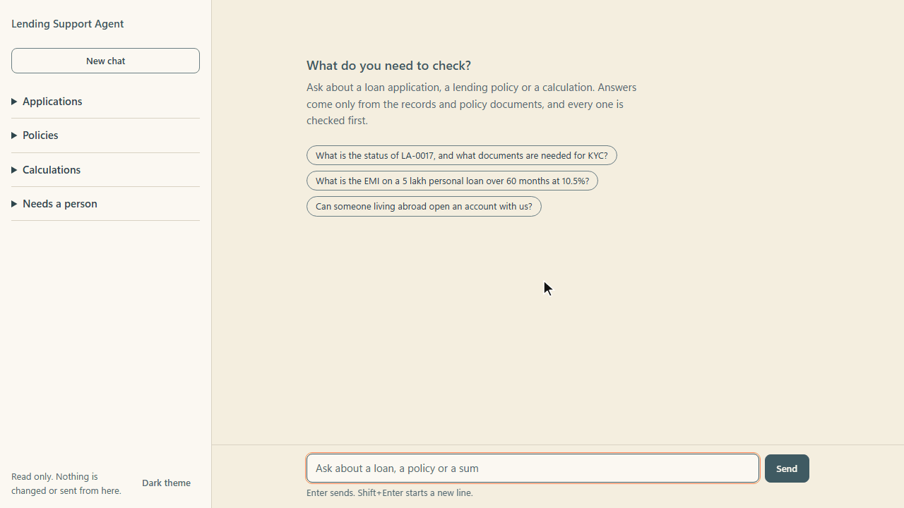

Featured build
Lending Support Agent
An operations desk for a lender, end to end. It looks up loan applications, answers from 12 policy documents with the source named, works out EMIs and totals in code, and hands anything that needs judgement to a person.
- Personal data maskedID numbers such as a PAN are masked before the model sees them.
- Instructions heldAttempts to override the agent's instructions are refused, with the reason shown.
- Read onlyA request to delete a record is blocked, nothing is changed, and it is reported to a person.
- Reviewed before it answersA second agent checks each reply against the records and policies.
Where it fits. An operations desk end to end: lookup, policy, calculation, review, and the guardrails a business needs before it trusts an agent.

Ask a question: the application record and the KYC policy in one answer, with its source.